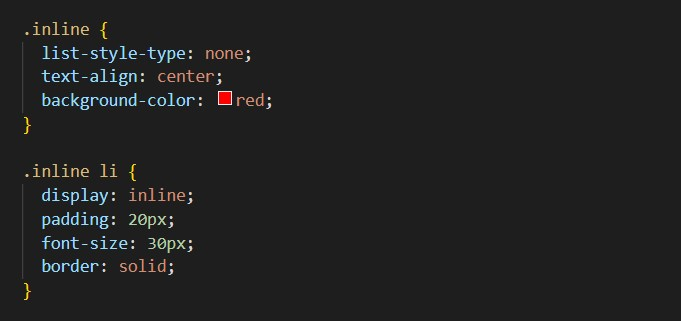
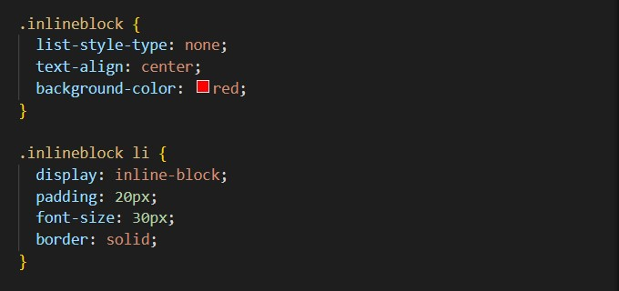

With different screen sizes, visual presentation is important. The two display properties: Inline and Inline-block, have different visual appearances on the different screen sizes. On smaller screens like a cell phone, the Inline property tends to split the contents and squash them together. The Inline-block property keeps the contents on smaller screens as they appear on a larger screens. Instead of squashing the contents Inline-block stacks the contents on top of each other.
See below for examples.
I have used the exact same properties and values in both examples.
Increase and decrease the screen size to see the differences.
Example - display: inline;
Screenshot of inline code
Example - display: inline-block;
Screenshot of inline-block code
